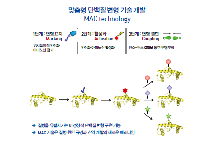
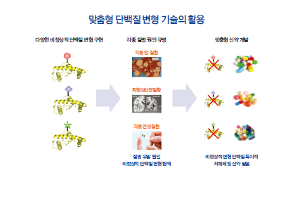

연구성과 10선
연구성과 10선
KAIST RESEARCH ACHIEVEMENTS
맞춤형 단백질 변형 기술
화학과 박희성
요약
우리 몸의 단백질은 인산화, 당화 등을 통해 다양하게 변형되는데, 이러한 변형은 신호 전달, 성장 등 정상적인 신진대사 활동에 매우 중요한 역할을 한다. 그러나, 유전적 혹은 환경적 요인으로 인해서 비정상적인 단백질 변형이 일어나면 각종 암은 물론, 퇴행성 신경 질환 및 여러 만성 질환을 유발시키는 것으로 알려져 있다. 금번 연구는 200여 종에 이르는 다양한 단백질 변형을 직접 구현 하여 원하는 변형 단백질을 합성할 수 있는 기술을 세계 최초로 개발하였다. 이는 비천연 인산화 아미노산을 단백질에 위치 특이적 으로 첨가하는 기술을 바탕으로 첨가된 인산화 아미노산의 반응성을 이용하여 새로운 탄소-탄소 결합을 통해서 단백질 변형 기능기를 접합함으로서 가능하였다. 이번 변형 단백질 조절 기술은 암과 치매를 포함한 각종 질병의 원인을 밝히는데 획기적인 기여를 할 것으로 기대되며, 특히, 맞춤형 표적 항암제, 뇌신경 치료제 개발 등 글로벌 신약개발 연구에 새로운 패러다임을 열 것으로 기대된다.
연구배경
우리 몸을 이루는 기본 단위인 세포는 2만여 종의 유전자를 가지고 있는 것으로 알려져 있고, 이로부터 만들어지는 단백질의 종류는 100만 종 이상이 될 것으로 추정된다. 이는 단백질이 만들어진 후 다양한 변형 (post-translational modification, PTM) 이 일어나기 때문이다. 이러한 단백질 변형의 원인으로는 인산화, 당화, 아세틸화, 메틸화 등 200여종이 알려져 있으며, 정상적으로 변형된 단백질들은 생체내에서 세포 신호 전달, 성장 등 우리 몸의 정상적인 신진대사활동에 매우 중요한 역할을 한다. 그러나, 유전적 혹은 환경적요인으로 인해서 비정상적인 단백질 변형이 일어나면 세포의 대사활동과 신호전달이 손상되어 세포의 무한 분열을 초래하는각종 암은 물론, 치매를 일으키는 퇴행성 신경 질환 및 당뇨를 포함한 각종 만성 질환을 유발시키는 것으로 알려져 있다. 이러한 비정상적인 단백질 변형을 구현할 수 있는 기술이 존재 하지 않아서 각종 질병의 원인 규명과 신약 개발 연구에 많은 어려움을 겪고 있었다.
연구내용
연구팀은 2011년 암을 유발시키는 직접적인 원인으로 알려진 비정상적인 단백질 인산화를 구현하기 위한 맞춤형 인산화 변형 단백질 생산 기술을 개발하여 Science 誌에 논문을 발표한 바 있다 [논문2]. 금번 연구는 지난 2011년 선행 연구결과를 더욱 발전시켜, 인산화 이외에 당화, 아세틸화 등 200여 종의 단백질 변형을 직접 구현하여 원하는 변형 단백질을 합성할 수 있는 기술을 세계 최초로 개발하여 Science 誌에 발표하였다 [논문1]. 이는 비천연 인산화 아미노산을 단백질에 위치 특이적으로 첨가하는 기술을 바탕으로 첨가된 인산화 아미노산의 반응성을 이용하여 새로운 탄소-탄소 결합을 통해서 단백질 변형 기능기를 접합함으로서 가능하였다.
 그림 1. 맞춤형 단백질 변형 기술 모식도
 그림 2. 맞춤형 단백질 변형 기술의 활용
우수성과 및 기대효과
- 참고자료 [논문 1] 에 대하여 KBS, JTBC, 조선일보, 중앙일도 등 언론보도
- 참고자료 [논문 1] 은 Science 誌 에서 가장 중요한 논문(FIRST RELEASE) 으로 선정
- 맞춤형 단백질 변형 조절 기술은 질병 규명과 신약 개발의새로운 지평을 열 것으로 기대됨
- 세포내에서 일어나는 복잡하고 다양한단백질 변형이 가능, 향후 비정상적인 질병유발 단백질 변형을 구현하고 인공적으로제어하는 등 암과 치매를 포함한 각종 질병의 원인을 밝히는데 기여
- 질병을 유발시키는 비정상적 변형 단백질의 대량 생산 가능. 기존에는 접근이 불가능하였던 비정상적인 변형 단백질을 직접신약 타겟으로 활용하는 저해제 탐색과 발굴 가능(그림2 참조)
- 본 기술이 실용화 될 경우 맞춤형 표적항암제, 뇌신경 치료제 개발 등이 가능, 현재 약 1,500조원에 달하는 글로벌 신약개발연구에 새로운 패러다음을 열 것으로 기대됨
참고자료
[논문1] A Yang, S Ha, J Ahn, R Kim, S Kim, Y Lee, J Kim, D Soll, H-Y Lee, & Hee-Sung Park, A chemical biology route to site-specific authentic protein modifications. Science, 354, 623-626 (2016)
[논문2] Hee-Sung Park, M Hohn, T Umehara, J Benner, C Noren, J Rinehart, & D Soll, Expanding the genetic code of Escherichia coli with phosphoserine. Science, 333, 1151-1154 (2011)